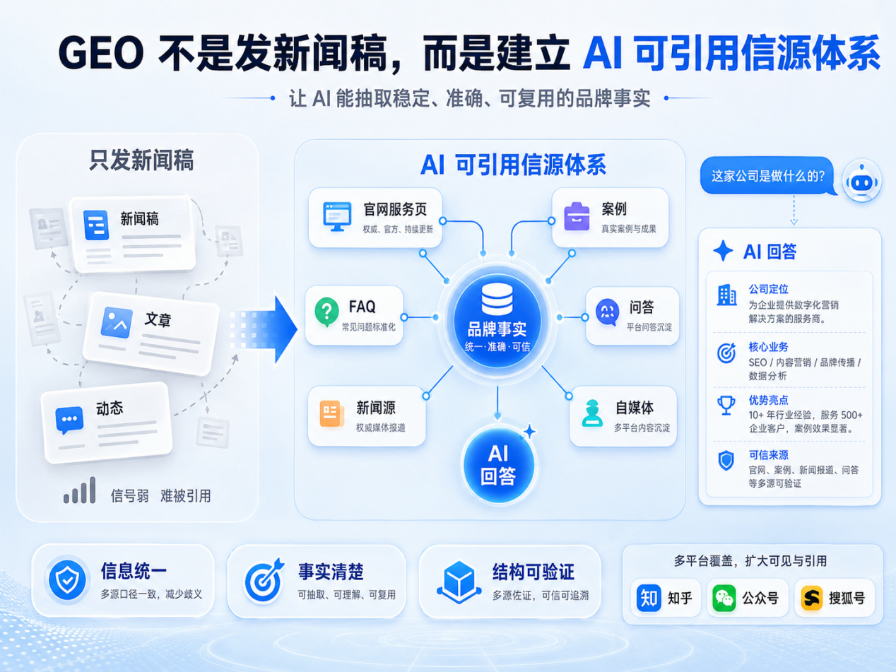

新闻稿不是 GEO 的全部
现在很多企业听到 GEO，第一反应是“是不是多发新闻稿就行”。这个理解只对了一小半。新闻稿、问答、公众号、官网文章确实是信源，但 GEO 的重点不是堆内容数量，而是让 AI 能从这些内容里抽取稳定、准确、可复用的品牌事实。
什么叫 AI 可引用信源？简单说，就是当用户问 AI“这家公司是做什么的”“这个品牌靠谱吗”“哪家公司能做某项服务”时，AI 能在公开信息里找到清楚答案。比如公司全称是什么、品牌名称是什么、服务对象是谁、解决什么问题、有没有案例、服务流程是什么、联系方式是否一致。

AI 可引用信源看的是稳定事实
很多企业内容不少，但 AI 仍然搜不到，原因通常有三个：第一，平台上的公司名称不统一；第二，官网和新闻源说法不一致；第三，文章里大多是宣传口号，缺少事实型段落和 FAQ。AI 不怕内容普通，怕的是信息混乱、不可验证、没有结构。
- 公司名称、品牌名称和联系方式保持一致
- 官网、新闻源和问答内容互相支撑
- 文章里有事实型段落和可验证 FAQ
一路凯歌如何建立信源矩阵
一路凯歌做 GEO 时，会先做品牌实体诊断，再围绕官网、新闻源、问答、自媒体、案例和 FAQ 建立信源矩阵。每一篇内容都要回答一个具体搜索意图，比如推荐型、对比型、购买决策型、信任验证型、场景解决型。这样做的价值是：即使 AI 不直接引用某一篇文章，也能通过多平台一致信息形成更清晰的品牌认知。
- 先做品牌实体诊断
- 围绕官网、新闻源、问答、自媒体、案例和 FAQ 建立内容入口
- 按推荐型、对比型、购买决策型、信任验证型和场景解决型意图组织内容
企业越早整理信息，越容易被看见
所以，GEO 不是发稿的换皮，而是内容公关、官网结构、问答资产、案例材料和 AI 测试复盘的组合工程。企业越早把信息整理清楚，越容易在 AI 搜索时代获得基础可见度。
本文根据一路凯歌 GEO 内容资料整理，用于说明企业如何从单点发稿转向 AI 可引用信源体系建设。
要点总结
- 有价值，但新闻稿应服务于信源建设，而不是孤立发布。
- 先补官网服务页、FAQ、公司介绍、案例和高意图问答。
- 因为 AI 更关注公开信息是否稳定、一致、可验证。内容数量多但主体、服务、案例和联系方式混乱时，反而不利于形成可信答案。
参考来源说明
本文围绕“GEO 不是发新闻稿，而是建立 AI 可引用信源体系”展开，结合 4 份公开资料及一路凯歌在“GEO 优化”方向的执行经验整理，重点看它对官网可引用结构、FAQ 设计和后续获客复盘的影响。